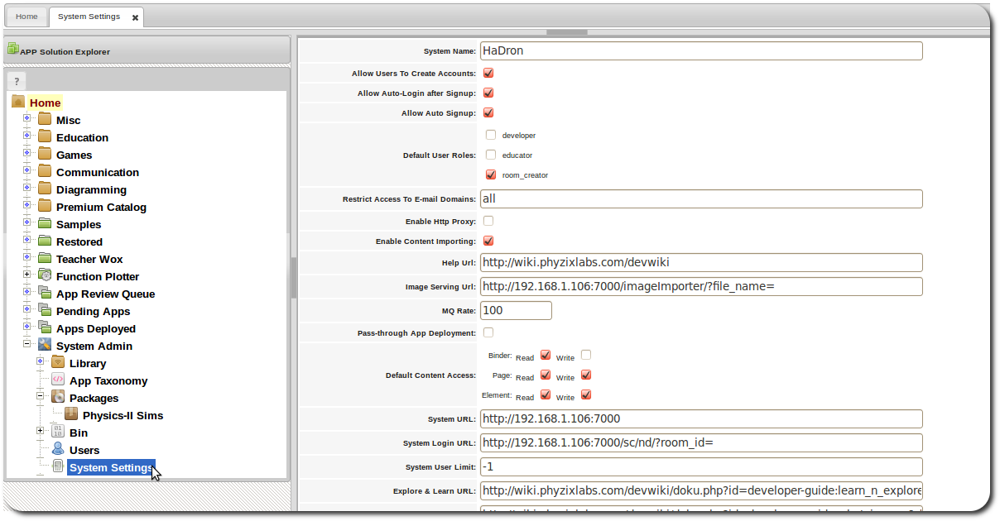

System Settings
Managing System Settings
The APPYnotebook platform is highly configurable through a set of system settings.:

System Name
The name of the current deployment of APPYnotebook. Could simply be the name of an institution such as a school.
Allow Users To Create Accounts
Whether users can create accounts on the the system. Otherwise only sysadmin role can create accounts.
Allow Auto-Login after Signup
Whether users should be required to check their email for passwords after signing up or whether to automatically login the user after they signup.
Allow Auto Signup
Whether users can be automatically signed up with out requiring a valid email address. This can be done in deployments that want to give users a easy way to tryout the platform.
Default User Roles
Allows for specifying the set of roles that users would automatically acquire during account creation.
Restrict Access To E-mail Domains
List of domains to which sign-up should be restricted. This can be the domain of an institution such as umd.edu or a department such as cs.umd.edu.
Enable Http Proxy
Whether proxy requests are enabled. This can allow APPs to make remote cross-domain requests.
Enable Content Importing
Whether importing of content into workspace is enabled. Importing can be computationally expensive so certain installations may not want it.
Help Url
The help url for the platform.
Image Serving Url
Url from which images would served. For instance this could be a dedicated server for serving images.
MQ Rate
The rate at which the embeded ActiveMQ ajax component should poll the server for messages.
Pass-through App Deployment
Whether to require APP submissions to go to the review queue or whether to make them available in production immediately.
Default Content Access
Set of default access control settings for content. For instance whether members of a group by default should be able to view one another's work.
System URL
The full url for this installation. This is the base url.
System Login URL
The url for loging into this installation. This would be used as part of signup verification emails.
System User Limit
The limit of number of users that can be allowed to signup on this system. Set to -1 for no limit.
Explore & Learn URL
The url for the explore and learn section in the developer IDE.
What's New URL
The url for the What's New section in the developer IDE.
Enable App Import
Whether APPs can be imported into this installation. Developers otherwise would have the ability to import packages into the system for further development and deployment. If set to false then packages can be added to the system on through the package management interface by a sysadmin.
Enable Load Sample Apps
Whether sample APPs should be loaded for new developer accounts.
Enable App Deployment
Whether APPs can be deployed by developers on this installation, otherwise only sysadmins would be able deploy APPs via package management interface.
Timezone List
List of timezones used in task management.
Account Creation E-mail Confirmation Sender
The smtp login for the email send when new accounts are created.
Group Invite E-mail Confirmation Sender
The smtp login for email sender for invites to join groups.
App notification Sender
The smtp login for email sender for APP notifications.